<nav class="menu">
    <app-ribbon></app-ribbon>
    <!-- For some reason abstracting this as a component moves the logo to the middle in the mobile view -->
    <div class="menu__logo">
        
    </div>
    <button class="menu__opener " type="button" data-toggle="collapse"
        data-target="#menu" aria-controls="menu" aria-expanded="false"
        aria-label="Toggle navigation">
        <span class="navbar-toggler-icon"></span>
    </button>

    <div class="collapse navbar-collapse" id="menu">
        <ul class="menu__options mr-auto">
            <li class="active">
                <a class="menu__options__item" href="./index.html">Home</a>
                <!-- Rourting missing -->
            </li>
            <li class="active">
                <a class="menu__options__item" href="./login.html">Log in</a>
                <!-- Rourting missing -->
            </li>
            <li class="active">
                <a class="menu__options__item" href="./signup.html">Sign up</a>
                <!-- Rourting missing -->
            </li>
            <li class="active">
                <a class="menu__options__item" href="./profile.html">Profile</a>
                <!-- Rourting missing -->
            </li>
            <li class="active">
                <a class="menu__options__item" href="./index.html">Log out</a>
                <!-- Rourting missing -->
            </li>
        </ul>
        <form class="form-inline">
            <input class="form-control mr-sm-2" type="search" placeholder="Search" aria-label="Search">
            <button class="button button-success" type="submit">Search</button>
            <!-- Rourting missing -->
        </form>
    </div>
</nav>
